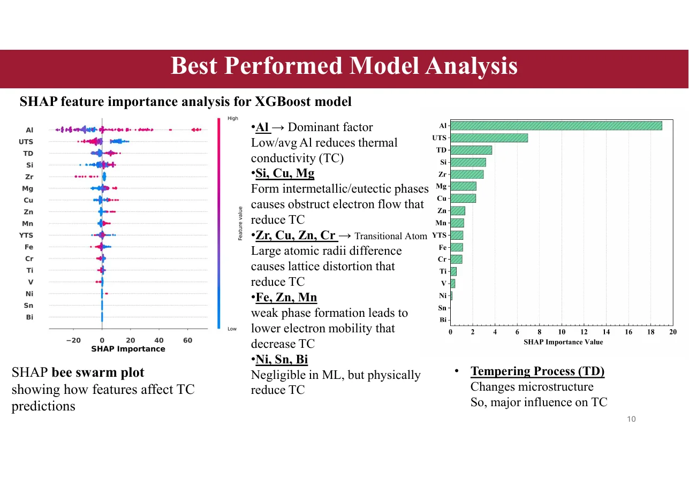

Adnan Roshid Shawon
Publications
Peer-reviewed research and submitted scholarly work.
Journal Article
Shawon, A. R., Ghosh, R., & Islam, M. A. Analysis of thermal conductivity of aluminum alloys by compositions and tempering process using machine learning. Scientific Reports, 15, 33352 (2025).
DOI · Code repository
Manuscript Submitted
Multi-fidelity Neural Network Framework for Predicting Mechanical Properties of Ti-6Al-4V in Powder Bed Fusion
Data-driven modeling of additively manufactured Ti-6Al-4V using process parameters and available material properties.